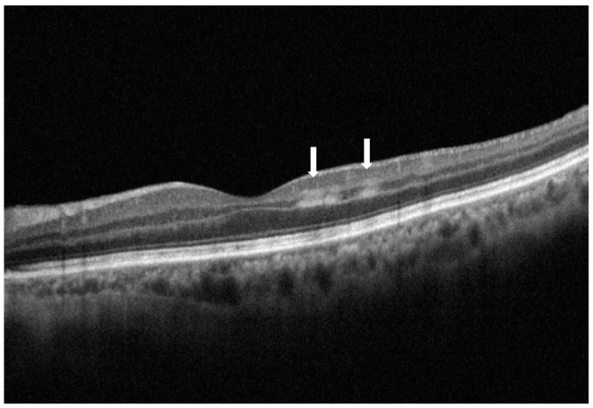
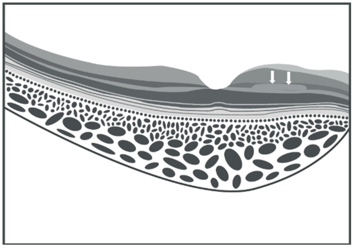
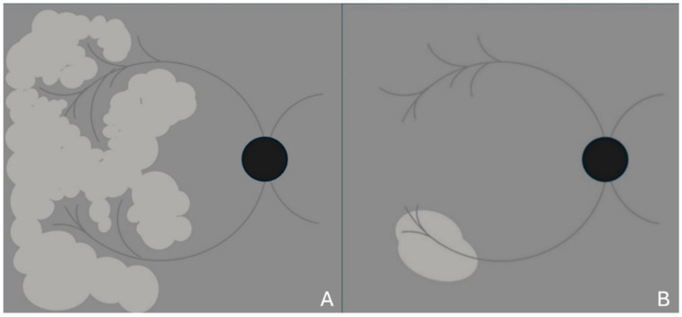
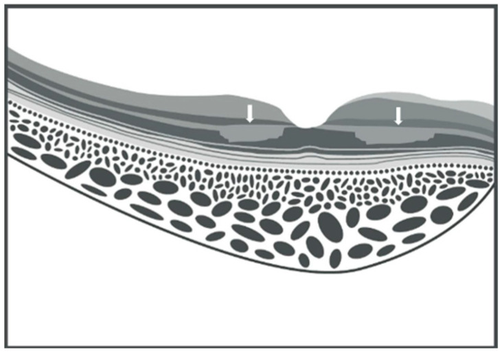
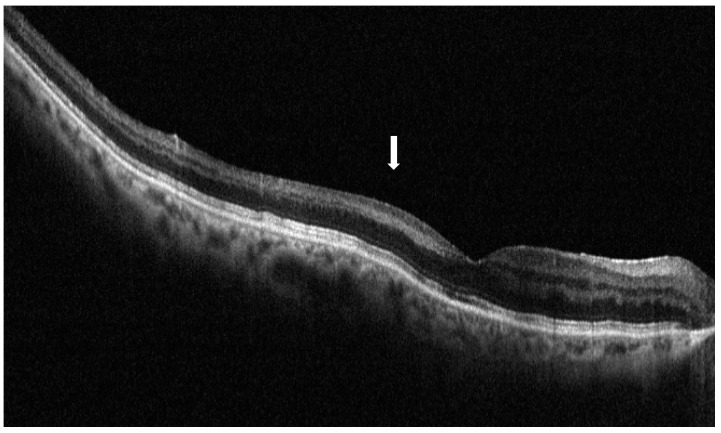

279 — PAMM: nhồi máu lớp giữa hoàng điểm (paracentral acute middle maculopathy) — tổn thương "vô hình" trên đáy mắt
Tags: pattern:nhoi-mau-lop-giua pattern:tac-mach-vong-mac pattern:phu-vong-mac pattern:am-diem vung:hoang-diem vung:vong-mac vung:mat score:PAMM protocol:OCT protocol:OCTA protocol:FFA protocol:SA-Doppler
Mức chắc chắn (certainty): tổng hợp y văn (literature synthesis) — 1 bài tổng quan hệ thống (Vision 2025;9:19, PMC11946784, CC BY 4.0) + số liệu đối chiếu từ 1 tổng quan tắc động mạch võng mạc (Medicina 2024, PMC11052062, CC BY 4.0). Ca trong quiz là ảnh minh họa nguyên văn của bài tổng quan, không phải bệnh nhân của nhóm.
Câu chốt: PAMM là nhồi máu lớp nhân trong (INL) do giảm tưới máu đám rối mao mạch sâu (DCP) — không phải bệnh của một mạch lớn, mà là dấu hiệu của cả một chuỗi thiếu máu võng mạc. Ba số phải thuộc: PAMM gặp ở 19,44% mắt tắc động mạch võng mạc (22,38% trong CRAO, 100% trong tắc động mạch mi–võng mạc đơn thuần); PAMM tồn tại dưới dạng "đã tan" (resolved PAMM/RIPL) ở 71,1% mắt BRVO và 71,4% mắt CRVO so với 19,3% người khỏe; và thị lực thường còn 20/20 dù bệnh nhân có ám điểm cạnh trung tâm — nên bỏ sót là chuyện thường.
1. Tổng quan bệnh học – cơ chế hình ảnh
1.1 Vì sao đúng LỚP NHÂN TRONG lại chết: vùng nước chia
- PAMM được Sarraf và cộng sự đặt tên năm 2013, khi nhận ra các dải tăng phản xạ trong lớp nhân trong (inner nuclear layer, INL) trên OCT — trước đó những vùng này được mô tả trên đáy mắt là mảng trắng quanh tĩnh mạch (Paques' plaques) trong CRVO.
- Giải phẫu mạch máu quyết định vị trí: võng mạc có 3 đám rối mao mạch — nông (SCP), trung gian (ICP) và sâu (DCP). SCP có nguồn cấp song song và nối tiếp nên chịu được thay đổi áp lực; DCP KHÔNG có nhánh động mạch đi thẳng từ SCP xuống, chỉ được cấp qua ICP, và chỉ được nuôi bằng các tiểu động mạch nhỏ hơn hẳn tĩnh mạch dẫn lưu.
- Mô hình Krogh cylinder: vùng giữa hai nguồn (đầu tận của tuần hoàn hắc mạc và tuần hoàn võng mạc) là watershed zone — nơi áp lực oxy thấp nhất về mặt sinh lý và nhạy nhất với tụt tưới máu. Thêm vào đó, tế bào ngang (horizontal cells) ở lớp giữa có nhu cầu chuyển hóa cao → INL là "điểm yếu" của võng mạc.
- Hệ quả: chỉ cần giảm lưu lượng nhẹ, thoáng qua (co mạch, tụt áp, tăng áp tĩnh mạch, thuyên tắc nhỏ) là đủ gây nhồi máu INL, trong khi lớp trong vẫn nguyên — vì thế không có trắng đục võng mạc kiểu CRAO.
1.2 Vì sao đáy mắt "bình thường" mà OCT lại bất thường
- Trắng đục võng mạc trên đáy mắt cần phù lớp trong (RNFL – tế bào hạch) làm tán xạ ánh sáng. Trong PAMM, lớp trong không phù, tổn thương nằm sâu trong INL → không tạo mảng trắng rõ (suy luận từ giải phẫu; bài tổng quan ghi nhận đáy mắt thường bình thường, đôi khi chỉ có vùng xám nhạt khó thấy, và các mảng này trắng hơn, ít bờ tua hơn đốm bông).
- Vì vậy OCT là phương tiện chẩn đoán, không phải đáy mắt: SD-OCT phân giải ~3–5 µm, đủ thấy dải tăng phản xạ dày vài chục µm trong INL.
- Triệu chứng: một hoặc nhiều ám điểm cạnh trung tâm, mô tả là "điểm xám cố định", nhìn mờ nhẹ, khó lấy nét; thị lực có thể 20/20. Lưới Amsler và vi phẫu trường (microperimetry) phát hiện ám điểm tương ứng.
1.3 Diễn tiến OCT: từ dải tăng phản xạ đến teo INL
| Giai đoạn | OCT | Vì sao |
|---|---|---|
| Cấp | Dải tăng phản xạ trong INL, ranh giới rõ, EZ/IZ còn nguyên | Phù nội bào + chiết suất mô tăng khi tế bào thiếu oxy |
| Cấp, thể "skip" | Nhiều dải rời rạc, bỏ đoạn dọc INL | Tắc nhánh tiểu động mạch thoáng qua rồi tái thông; vùng tưới xen kẽ vùng không |
| Đã tan (resolved PAMM / RIPL) | INL mỏng + OPL nâng cao, bề mặt lớp giữa dạng gợn sóng | Tế bào chết → mô xơ teo, co kéo lớp lân cận |
| Mạn | "Hố đen" (black holes) trên ảnh en-face, giảm mật độ DCP trên OCTA | Mất mô + mất tưới máu DCP không hồi phục |

SD-OCT nhát cắt ngang mắt trái: hai dải tăng phản xạ chủ yếu trong lớp nhân trong ở vùng cạnh trung tâm phía thái dương (mũi tên trắng) — thể "skip" PAMM; các lớp ngoài (EZ/IZ) còn nguyên. Nguồn: Fumi D, Ruggeri F, Fasciolo D, Antonello E, Burtini G, Abdolrahimzadeh S. Vision 2025;9:19 — PMC11946784, CC BY 4.0.1.4 Vì sao PAMM là "đèn báo" chứ không phải bệnh riêng lẻ
- PAMM xuất hiện trong tắc tĩnh mạch (CRVO/BRVO), tắc động mạch (CRAO/BRAO/tắc động mạch mi–võng mạc), bệnh võng mạc đái tháo đường, bệnh võng mạc tăng huyết áp, hội chứng thiếu máu mắt, sau phẫu thuật mắt, chấn thương, thuốc co mạch, nhiễm trùng/huyết khối và bệnh hệ thống (thiếu máu, tăng đông, bệnh hồng cầu hình liềm).
- "Thác thiếu máu võng mạc" (retinal ischemic cascade): PAMM có thể là dấu hiệu sớm nhất, xuất hiện trước khi có hình ảnh RVO/RAO rõ — nên gặp PAMM phải tìm nguyên nhân, không dừng ở mô tả.
2. Mẫu hình + chẩn đoán phân biệt theo hình thái (Gamut)
- Thể tiểu động mạch (arteriolar) — "skip"/dạng dương xỉ (fern-like): nhiều ổ nhỏ, bờ tua, quanh tĩnh mạch, thường do tắc tiểu động mạch thoáng qua; tiên lượng thị lực tốt hơn.
- Thể hình cầu lan tỏa (globular): một ổ lớn, bờ tròn, lan theo chiều ngang trong INL; gặp trong CRVO hoặc thiếu máu nặng/kéo dài; thị lực xấu hơn.
- Thể phối hợp: tổn thương lan cả lớp trong khi thiếu máu nặng (gần giống CRAO khu trú).
- Gamut theo nguyên nhân: tĩnh mạch (RVO) → động mạch (CRAO/BRAO/CILRAO) → vi mạch (đái tháo đường, tăng huyết áp, xạ trị, hồng cầu hình liềm) → thủ thuật/thuốc → hệ thống (tụt áp, sốc, thiếu máu, tăng đông).
- Mẹo nhớ 3 tầng: Đáy mắt bình thường + ám điểm cạnh trung tâm + OCT dải INL → nghĩ PAMM, rồi hỏi "tĩnh mạch, động mạch, hay vi mạch?".
3. Bảng so sánh phân biệt (ma trận đối chiếu)
| Thực thể (entity) | Hình ảnh điển hình | Chốt vào (rule-in) | Chốt loại (rule-out) | Gợi ý xác nhận |
|---|---|---|---|---|
| PAMM | Dải tăng phản xạ TRONG INL, EZ/IZ nguyên, đáy mắt thường bình thường, ám điểm cạnh trung tâm | Tăng phản xạ INL + EZ/IZ còn nguyên + không trắng đục | Tổn thương OPL/ONL + EZ/IZ đứt → AMN; trắng đục lan tỏa → CRAO | SD-OCT + OCTA (mất tín hiệu DCP); en-face: dương xỉ/hình cầu |
| AMN (acute macular neuroretinopathy) | Tổn thương lớp rối ngoài (OPL) và lớp nhân ngoài (ONL), đứt EZ/IZ, ám điểm hình cánh hoa/bầu dục | Đứt EZ/IZ + tổn thương lớp ngoài | Chỉ INL, EZ/IZ nguyên → PAMM | SD-OCT nhát cắt qua ám điểm; NIR |
| CRAO (bài 276) | Trắng đục lan tỏa + điểm đỏ anh đào, OCT tăng phản xạ cả lớp trong, thị lực ≤ đếm ngón tay | Trắng đục + điểm đỏ + thị lực rất kém | Chỉ một dải INL, đáy mắt bình thường → PAMM | Đáy mắt + OCT; FFA chậm tưới máu |
| BRAO | Trắng đục khu trú theo nhánh + khuyết thị trường góc phần tư | Khu trú theo lãnh thổ nhánh | Nhiều ổ nhỏ cạnh trung tâm → PAMM | FFA: nhánh không đổ thuốc |
| Đốm bông (cotton wool spot) | Mảng trắng bờ tua theo bó sợi thần kinh, ở lớp sợi thần kinh | Tăng phản xạ RNFL trên OCT, bờ tua | Tăng phản xạ INL, bờ nhẵn → PAMM | OCT: định vị lớp; đáy mắt |
| Phù hoàng điểm đái tháo đường | Dày võng mạc, nang, xuất huyết/vi phình mạch, mất phản xạ hõm | Nang + dày võng mạc + vi phình mạch | Chỉ dải INL mảnh, không nang → PAMM | OCT, FFA; HbA1c |
| Purtscher | Nhiều mảng trắng quanh đĩa thị sau chấn thương/viêm tụy, kèm xuất huyết | Bối cảnh chấn thương + nhiều mảng quanh đĩa | Ổ cạnh trung tâm đơn độc → PAMM | Bệnh sử; OCT |

Sơ đồ: tổn thương dạng dải trong lớp nhân trong (mũi tên trắng); giai đoạn muộn lớp này mỏng đi và lớp rối ngoài nâng cao — "gợn sóng" lớp giữa là dấu của PAMM đã tan. Nguồn: Fumi D và cs., Vision 2025;9:19 — PMC11946784, CC BY 4.0.Phân biệt 3 hình thái trên ảnh en-face
- Dương xỉ (fern-like): các nhánh tỏa ra từ vùng quanh tĩnh mạch, giống lá dương xỉ — thể nhẹ, thoáng qua.
- Hình cầu (globular): đám tròn, đặc, lan rộng theo chiều ngang — thể nặng, liên quan thiếu máu kéo dài/CRVO.
- Kết hợp: vùng hình cầu ở trung tâm + nhánh dương xỉ ngoại vi; tiên lượng trung gian.

Sơ đồ en-face: (A) dương xỉ — nhiều nhánh nhỏ tỏa từ vùng quanh tĩnh mạch; (B) hình cầu — đám tròn đặc lan rộng. Hình thái hình cầu đi kèm thị lực xấu hơn. Nguồn: Fumi D và cs., Vision 2025;9:19 — PMC11946784, CC BY 4.0.
Sơ đồ AMN: tổn thương tăng phản xạ ở lớp rối ngoài và lớp nhân ngoài (mũi tên), kèm đứt đoạn EZ/IZ — ngược lại PAMM chỉ ở INL và giữ nguyên EZ/IZ. Nguồn: Fumi D và cs., Vision 2025;9:19 — PMC11946784, CC BY 4.0.4. Protocol chụp + theo dõi
4.1 Chùm hình ảnh tối thiểu
- SD-OCT hoàng điểm (nhát cắt ngang + khối thể tích đủ dày để không bỏ sót thể "skip"): định vị tổn thương trong INL, kiểm tra EZ/IZ.
- OCTA: mất tín hiệu dòng chảy ở DCP (đôi khi cả SCP); ở thể đã tan có thể tái tưới máu → OCTA không đủ để loại trừ PAMM cũ.
- En-face OCT: xác định hình thái dương xỉ / hình cầu / hố đen.
- NIR (hồng ngoại): vùng xám nhạt cạnh trung tâm tương ứng (có ca không thấy gì).
- FAF: có thể giảm huỳnh quang dạng dương xỉ; FFA thường bình thường — chỉ giảm huỳnh quang nhẹ tương ứng, và không phân biệt được DCP với ICP.
- FFA/Doppler cảnh khi nghi RAO hoặc có thuyên tắc nhìn thấy; FFA vẫn cần để phát hiện RVO, bệnh võng mạc đái tháo đường nền.
4.2 Xét nghiệm nguyên nhân (PAMM là dấu hiệu, không phải chẩn đoán cuối)
- Huyết áp, HbA1c/glucose, lipid, công thức máu, đông máu/tầm soát tăng đông nếu trẻ hoặc tái phát.
- ECG (rung nhĩ), siêu âm tim nếu nghi nguồn thuyên tắc; siêu âm Doppler cảnh nếu kèm hình ảnh RAO hoặc bệnh nhân > 50 tuổi.
- Tầm soát bệnh hệ thống khi PAMM ở người trẻ không có yếu tố nguy cơ: bệnh tự miễn, nhiễm trùng, bệnh tăng sinh tủy.
4.3 Theo dõi
- Lâm sàng: lưới Amsler tại nhà, đo vi phẫu trường nếu có; thị lực không phản ánh mức tổn thương.
- OCT lặp 1–3 tháng: xác nhận INL mỏng + OPL nâng (resolved PAMM); nếu tổn thương lan ra lớp trong hoặc xuất hiện phù/xuất huyết → tìm RVO/RAO tiến triển.
- Số liệu tiên lượng: PAMM đi kèm RAO có thị lực tốt hơn RAO không kèm PAMM (88 mắt: 58 CRAO, 30 BRAO, 52 có PAMM) — giả thuyết là cơ chế tự điều chỉnh lưu lượng của tiểu động mạch tận; nhưng PAMM hình cầu hoặc lan lớp trong thì xấu hơn.
flowchart TD
A["Bệnh nhân than ám điểm cạnh trung tâm, thị lực có thể 20/20"] --> B["Đáy mắt + SD-OCT khối thể tích hoàng điểm"]
B --> C{"Dải tăng phản xạ trong lớp nhân trong?"}
C -->|Không| D["Nghĩ AMN, đốm bông, phù hoàng điểm, bệnh khác"]
C -->|Có| E{"EZ/IZ còn nguyên?"}
E -->|Không| D
E -->|Có| F["Xác nhận PAMM"]
F --> G["OCTA: mất tín hiệu DCP; en-face: dương xỉ hay hình cầu"]
G --> H{"Có hình ảnh tắc mạch lớn kèm theo?"}
H -->|Có| I["Xử trí như RAO/RVO: Doppler cảnh, siêu âm tim, ECG, xét nghiệm tăng đông"]
H -->|Không| J["Tầm soát vi mạch: huyết áp, HbA1c, lipid, công thức máu"]
I --> K["Theo dõi OCT 1-3 tháng: INL mỏng, OPL nâng, hố đen"]
J --> K
K --> L["Kiểm soát yếu tố nguy cơ; khám lại nếu ám điểm mới"]
5. Biến thể bình thường và cạm bẫy
- Bỏ sót vì chụp quá mỏng: thể "skip" gồm nhiều dải rời rạc — một nhát cắt đơn có thể đi qua khe giữa hai dải → luôn chụp khối thể tích hoặc nhiều nhát cắt song song qua vùng ám điểm.
- Gọi nhầm là "bình thường": đáy mắt bình thường + thị lực 20/20 là bộ đôi đánh lừa điển hình; hỏi ám điểm và làm Amsler.
- PAMM đã tan bị đọc là teo không rõ nguyên nhân: INL mỏng + OPL nâng là dấu di chứng, không phải bệnh mới; ở người già, tăng huyết áp, hút thuốc có thể gặp 19,3% người khỏe — nhưng ở mắt bạn của bệnh nhân RVO, tỷ lệ cao hơn hẳn (71,1% BRVO, 71,4% CRVO).
- Đối chiếu PAMM – AMN: cùng bệnh cảnh ám điểm cạnh trung tâm, nhưng AMN tổn thương lớp ngoài + đứt EZ/IZ, ám điểm hình cánh hoa; PAMM trong INL, EZ/IZ nguyên. Có ca phối hợp cả hai — không loại trừ nhau.
- FFA bình thường không loại trừ PAMM: FFA không phân biệt được DCP/ICP; tương tự OCTA ở thể đã tan có thể thấy tưới máu đã hồi phục.
- Quy kết nguyên nhân quá vội: PAMM sau COVID/vaccine đã được báo cáo nhưng phần lớn là ca lẻ, không chứng minh nhân quả — ưu tiên tìm nguyên nhân mạch máu phổ biến (tăng huyết áp, đái tháo đường, RVO) trước.
- Nghịch lý tiên lượng: thấy PAMM trong CRAO không phải dấu xấu — nhóm có PAMM kèm theo có thị lực tốt hơn; đừng dùng sự hiện diện của PAMM để tiên lượng nặng.

SD-OCT mắt phải ở bệnh nhân có tiền sử tắc nhánh tĩnh mạch võng mạc: tổn thương PAMM kéo dài theo chiều ngang, lớp nhân trong mỏng kèm lớp rối ngoài nâng cao — dấu hiệu của PAMM đã tan (resolved PAMM/RIPL). Nguồn: Fumi D và cs., Vision 2025;9:19 — PMC11946784, CC BY 4.0.6. Tự lượng giá — Blind Quiz ngay trên trang tĩnh
Ca 1 — Nam 62 tuổi, đái tháo đường type 2, than "một điểm xám cố định" cạnh trung tâm mắt trái 3 ngày; thị lực 20/25.
- Câu hỏi: Tổn thương nằm ở lớp nào? Vì sao đáy mắt không trắng như CRAO? Cần chụp thêm gì và hỏi gì để tìm nguyên nhân?
Bấm để hiện đáp án
- Dấu hiệu: hai dải tăng phản xạ rời rạc trong lớp nhân trong ở vùng cạnh trung tâm phía thái dương; EZ/IZ còn nguyên → thể "skip" PAMM.
- Vì sao không trắng: tổn thương sâu trong INL, lớp trong (RNFL/hạch) không phù nên không tán xạ ánh sáng thành mảng trắng; đáy mắt có thể bình thường.
- Việc cần làm: OCTA (mất tín hiệu DCP), en-face (dương xỉ/hình cầu), HbA1c, huyết áp, lipid, FFA để tìm RVO/bệnh võng mạc đái tháo đường; hỏi ám điểm bằng lưới Amsler.
- Nguồn: Fumi D và cs., Vision 2025;9:19 — PMC11946784, CC BY 4.0.
Ca 2 — Nữ 58 tuổi, CRVO cấp, OCT có dải tăng phản xạ dài theo chiều ngang; ảnh en-face cho hai kiểu hình thái.
- Câu hỏi: Hình thái nào tiên lượng tốt hơn? Vì sao thể hình cầu đi với thị lực xấu hơn? Có cần điều trị đặc hiệu cho PAMM không?
Bấm để hiện đáp án
- (A) dương xỉ = thể tiểu động mạch, tổn thương thoáng qua, tiên lượng tốt hơn; (B) hình cầu = lan rộng theo chiều ngang, thiếu máu nặng/kéo dài, thị lực xấu hơn.
- Thể hình cầu lan rộng có thể tiến triển sang lớp trong (thiếu máu cả võng mạc trong) — đó là lý do tiên lượng kém, không phải bản thân "hình cầu".
- Không có điều trị đặc hiệu cho PAMM: điều trị nguyên nhân (kiểm soát huyết áp/đường huyết, xử trí CRVO, phát hiện RAO) và theo dõi; PAMM là dấu hiệu, không phải đích điều trị.
- Nguồn: Fumi D và cs., Vision 2025;9:19 — PMC11946784, CC BY 4.0.
Ca 3 — Nam 70 tuổi, tiền sử BRVO 2 năm, khám định kỳ không triệu chứng; OCT thấy lớp giữa "gợn sóng".
- Câu hỏi: Đây là tổn thương cấp hay mạn? Dấu OCT nào chốt? Vì sao phải khám mắt còn lại và tầm soát tim mạch?
Bấm để hiện đáp án
- Mạn: INL mỏng + OPL nâng cao tạo bề mặt gợn sóng = resolved PAMM/RIPL; không còn dải tăng phản xạ cấp.
- Đây là di chứng, nhưng số lượng RIPL tương quan với nguy cơ tim mạch: nhóm bệnh tim mạch có 2,8 tổn thương so với 0,8 ở nhóm chứng, và tăng theo thang nguy cơ xơ vữa 10 năm.
- Mắt còn lại của bệnh nhân RVO có tỷ lệ RIPL cao hơn hẳn người khỏe (71,1% BRVO, 71,4% CRVO so với 19,3%) → khám mắt lành + tầm soát huyết áp, đường huyết, lipid, tim mạch.
- Nguồn: Fumi D và cs., Vision 2025;9:19 — PMC11946784, CC BY 4.0.
Bài liên quan chéo
- 276 – Tắc động mạch trung tâm võng mạc (CRAO) (PAMM là dấu tiên lượng tốt khi kèm CRAO)
- 278 – Tắc động mạch mắt (OAO) (thiếu máu hai tầng: mất cả lớp ngoài)
- 444 – Tắc mạch võng mạc: CRVO/BRVO vs CRAO (nguyên nhân thường gặp nhất của PAMM)
- 443 – Bệnh võng mạc đái tháo đường (PAMM là dấu vi mạch sớm)
- 453 – Bệnh võng mạc tăng huyết áp và thiếu máu (đốm bông – phân biệt)
- 441 – OCT hoàng điểm (đọc phân lớp INL/OPL/EZ)
- 274 – Thiếu máu mắt (OIS) (bệnh cảnh thiếu máu mạn, tân mạch)
- 400 – Tổng quan Mắt & thị giác
Ảnh
279_pamm_skip-OCT_PMC11946784.jpg— Fig. 1 (PAMM thể "skip", SD-OCT thật).279_pamm_OCT-so-do_PMC11946784.jpg— Fig. 2 (sơ đồ dải INL và tiến triển teo).279_pamm_enface-so-do_PMC11946784.jpg— Fig. 4 (en-face: dương xỉ vs hình cầu).279_pamm_AMN-doi-chieu_PMC11946784.jpg— Fig. 5 (sơ đồ AMN — đối chiếu).279_pamm_resolved-OCT_PMC11946784.jpg— Fig. 6 (resolved PAMM trên BRVO).- Tất cả từ PMC11946784, CC BY 4.0 — ảnh nguyên bản, không crop; chi tiết tác giả trong
images/CREDITS.md.
Không dùng để chẩn đoán độc lập khi chưa có người hướng dẫn.